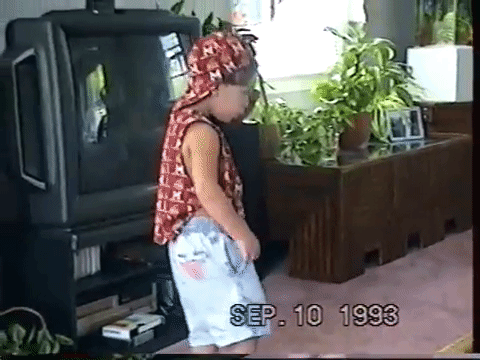
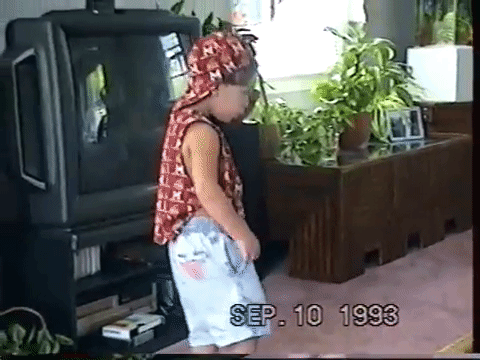

About
Sequoia is a creative initiative by multidisciplinary designer and multi-instrumentalist Derek Torsani. Currently, Derek lives and works out of Washington, DC, designing digital products and managing a design system for Oracle.
Let's change the way we eat, the change the way live, and let's change the way we treat each other. —Tupac Shakur, 1992
Principles
Communication
Honest and transparent communication are important to understand the perspectives around oneself. Listening to those speaking takes precedence over checking the latest notification received. Devices are kept on 'do not disturb' to ensure full engagement in the present moment over distraction and not giving the human or task the attention it deserves.
Tangibility
Social media is a human-made construct to falsely validate our value in society. In-person interactions provide a more welcoming space for emotive transmission as well as appropriate moments for silence. With the adoption of screens has also come the adaptation of emotional ignorance. Connection with the world beyond the screen promotes the wealth of the mind and the health of the heart.
Altruism
Giving back of ones resources and gifts is worth more than the receipt of clout and money. We are not promised tomorrow. We do not go to the grave with our belongings, but leave behind what we have given. Monetization is never the first goal of any project. Cleaning up the earth and lending a hand to marginalized communities allow us to mother nature and one another in ways we all need but are sometimes not humble enough to admit. The more empathy is learned for the ones we don't see in the mirror, the more harmonious we can live among each other.
Recognition
Creative and spiritual inspiration occurs when we listen to people who are different than ourselves tell their stories. Recognition of privilege by way of race, class, access to resources is necessary for acknowledgement of contrasting perspectives. This recognition can be found in music, podcasts, books, film, and other forms of dialogue.
Studiousness
Practice makes progress. Striving for perfection limits the ability to reach people hoping for connection to purpose and relation. Exclusive language does not allow different demographics and identities of people to understand a message and join in conversation. Design and music are both languages that can transcend barriers of culture, language, and emotion. Universal languages that allow for inclusivity and challenge us to think about how others experience the world.